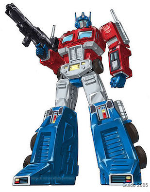

Optimus Prime

Optimus Prime is a fictional character from the popular media franchise Transformers.
In the world of Transformers, he like everyone else is a Cybertronian which are sentient robot
lifeforms that can transform into many things like vehicles, animals, etc. In most cases, he transforms
into a red and blue semi-truck. He serves as the leader of the Autobots, a faction of Transformers who
are at war of the opposing faction, the Decepticons.
-
I admire his sense of leadership as he's known to be a selfless leader that strives for justice and inspires fellow
Autobots to do the same.
-
I admire the bravery and courage he processes as he's willing to risk his own life to protect and ensure safety for his people
-
I admire the voice actor of Optimus Prime, Peter Cullen and his portrayal of the character as his talent
brings out the heroic qualities of Optimus Prime.